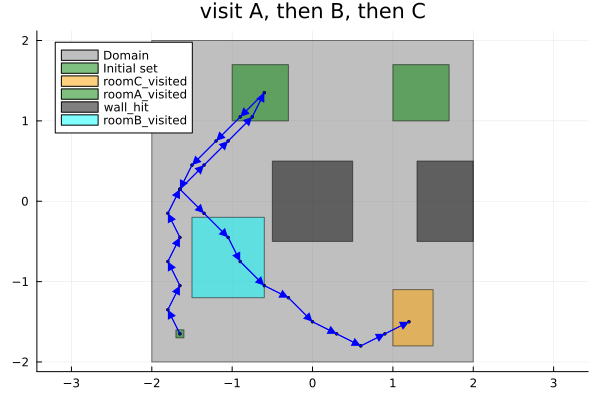
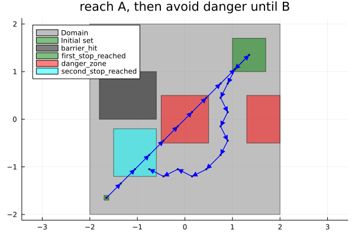

Integrator: a sequencing task and an until, as co-safe LTL
| System | 2-D continuous, linear |
| Specification | co-safe LTL |
| Solver | uniform grid abstraction |
Every other example states its goal with one of the named patterns — Final, Always, EventuallyAlways. Those cover the common shapes, and because each has a dedicated fixed-point algorithm they are much faster than the alternative. But they cannot say "visit A, then B, then C, in that order", or "once you have reached A, keep out of the danger zone until you get to B". Order and until are temporal, and they need a formula.
This page states two such tasks on the simplest possible plant, so that nothing but the specification is doing the work. The plant is a 2-D single integrator — the control is the velocity:
\[\dot{x}_1 = u_1, \qquad \dot{x}_2 = u_2, \qquad x \in [-2, 2]^2, \quad u \in [-1, 1]^2 .\]
The vocabulary is two macros. Label names a region of the state space, and the atomic proposition is the JuMP constraint's own name; @specification says what must hold over those names. It accepts two things, and this page uses one of each: a Spot formula, which is what you reach for first, and a hand-written monitor, which is what you fall back to when the formula cannot be compiled — as happens to the second task below.
using StaticArrays, JuMP, Plots
import LazySets
using Symbolics, MathOptSymbolicADThe formula is parsed by Spot and compiled into the deterministic automaton the solver steps. The ltl"..." string macro comes from Spot.jl; loading it is what enables the front-end to accept a formula at all.
using Spot
using Dionysos
const DI = Dionysos
const UT = DI.Utils
const ST = DI.System
const MP = DI.Mapping
const AB = DI.Optim.Abstraction;The plant
Both tasks share the same integrator and the same discretisation, so they are written once. ∂f/∂x = 0 for this system, so the zero matrix is an exact growth bound rather than a conservative one: the abstraction loses nothing here, and every failure below would be a real one rather than an artefact of the discretisation.
function integrator_model()
model = Model(Dionysos.Optimizer)
@variable(model, -2.0 <= x[1:2] <= 2.0)
@variable(model, -1.0 <= u[1:2] <= 1.0)
@constraint(model, ∂(x[1]) == u[1])
@constraint(model, ∂(x[2]) == u[2])
set_attribute(model, "jacobian_bound", u -> @SMatrix zeros(2, 2))
set_attribute(model, "approx_mode", AB.UniformGridAbstraction.GROWTH)
set_attribute(model, "time_step", 0.3)
set_attribute(model, "state_grid", MP.GridFree(SVector(0.0, 0.0), SVector(0.2, 0.2)))
set_attribute(model, "input_grid", MP.GridFree(SVector(0.0, 0.0), SVector(0.5, 0.5)))
set_attribute(model, "print_level", 0)
return model, x
end;Both runs start from the same corner.
start_region =
LazySets.Hyperrectangle(; low = SVector(-1.7, -1.7), high = SVector(-1.6, -1.6))
x0 = SVector(-1.65, -1.65);Task 1 — visit three rooms in order
F(a & F(b & F(c))) is the idiom for ordered reachability: reach a, and only from there start looking for b, and only then for c. Nesting is what encodes the order — a flat F(a) & F(b) & F(c) would be satisfied by visiting them in any order at all.
model, x = integrator_model();roomA is deliberately two disjoint boxes. Label takes any bounded LazySet, so a region can be a union, and the task then reads "reach either of these two rooms" — the controller picks whichever is cheaper from where it happens to be.
roomA = UT.set_union([
LazySets.Hyperrectangle(; low = SVector(-1.0, 1.0), high = SVector(-0.3, 1.7)),
LazySets.Hyperrectangle(; low = SVector(1.0, 1.0), high = SVector(1.7, 1.7)),
])
roomB = LazySets.Hyperrectangle(; low = SVector(-1.5, -1.2), high = SVector(-0.6, -0.2))
roomC = LazySets.Hyperrectangle(; low = SVector(1.0, -1.8), high = SVector(1.5, -1.1))
wall = UT.set_union([
LazySets.Hyperrectangle(; low = SVector(-0.5, -0.5), high = SVector(0.5, 0.5)),
LazySets.Hyperrectangle(; low = SVector(1.3, -0.5), high = SVector(2.0, 0.5)),
]);semantics is how a region is turned into cells, and it is the conservative choice in both directions: INNER (the default) keeps only cells lying entirely inside a region, so "reached" means unambiguously reached; OUTER keeps every cell that so much as touches it, so "avoided" means avoided with room to spare.
@constraint(model, roomA_visited, x in Label(roomA))
@constraint(model, roomB_visited, x in Label(roomB))
@constraint(model, roomC_visited, x in Label(roomC))
@constraint(model, wall_hit, x in Label(wall; semantics = MP.OUTER))
@constraint(model, x in Start(start_region));Read it as: never hit a wall, and reach room A, and from there room B, and from there room C.
@specification(
model,
ltl"G(!wall_hit) & F(roomA_visited & F(roomB_visited & F(roomC_visited)))"
)
optimize!(model);termination_status(model)OPTIMAL::TerminationStatusCode = 1sequencing_problem = get_attribute(model, "concrete_problem");The closed loop runs the full horizon: a co-safe task has no "arrived" state to stop at — the controller is done only when the automaton reaches an accepting state, and watching it keep station afterwards is part of the picture.
sequencing_traj = Dionysos.simulate(model, x0; nsteps = 80);The controller carries the automaton as memory: which rooms it has already ticked off is not a function of where it is now, so the same point in the plane can call for different inputs at different times. That is why the trajectory below crosses itself without contradiction — a static state-feedback map could not produce it.
fig1 = plot(; aspect_ratio = :equal, title = "visit A, then B, then C")
plot!(
sequencing_problem;
ap_colors = Dict(
:roomA_visited => :green,
:roomB_visited => :cyan,
:roomC_visited => :orange,
:wall_hit => :black,
),
)
plot!(sequencing_traj; ms = 1.5, color = :blue)
Task 2 — an until, written as a monitor
(!danger) U goal is a genuinely different demand from F(goal) & G(!danger): the ban on danger is lifted the moment goal is reached, rather than lasting forever. We want that obligation to switch on only once first_stop has been visited, which reads G(!barrier) & F(first_stop & ((!danger) U second_stop)) — and that formula is not accepted. @specification compiles a formula by asking Spot for a deterministic automaton, and Spot's determinization fails on an U nested inside an F(a & …) — it raises AssertionError: is_deterministic. A top-level U is fine (G(!w) & F(a) & ((!b) U c) compiles); it is specifically the nesting that breaks.
So this task takes the other route @specification accepts: a hand-written monitor. That escape hatch exists precisely for the formulas the translator cannot handle, and writing one is mechanical — it is the automaton you would have drawn on paper.
const OPDS = DI.Optim.DiscreteSystems;Four states: 1 = before the first stop, 2 = between the two (danger now forbidden), 3 = done, 0 = dead. ap is the set of atomic propositions true in the state just entered, so each clause reads as "given where I am in the task, and what holds here, where do I go next".
function until_step(q::Int, ap::Tuple{Vararg{Symbol}})
barrier = :barrier_hit in ap
first_stop = :first_stop_reached in ap
second_stop = :second_stop_reached in ap
danger = :danger_zone in ap
barrier && return 0 ## the barrier is fatal at every point in the task
q == 0 && return 0 ## dead absorbs
q == 3 && return 3 ## done absorbs
if q == 1
# Before the first stop the danger zone is free to cross; arriving at the first
# stop while already standing in the second finishes the task outright.
first_stop || return 1
return second_stop ? 3 : 2
end
# q == 2: the until is running — reach the second stop, and no danger before then.
second_stop && return 3
return danger ? 0 : 2
end
until_monitor = OPDS.FunctionMonitor(1, Set([3]), until_step);model2, x2 = integrator_model();
first_stop = LazySets.Hyperrectangle(; low = SVector(1.0, 1.0), high = SVector(1.7, 1.7))
second_stop =
LazySets.Hyperrectangle(; low = SVector(-1.5, -1.2), high = SVector(-0.6, -0.2))
barrier = LazySets.Hyperrectangle(; low = SVector(-1.8, 0.0), high = SVector(-0.6, 1.0))
danger = UT.set_union([
LazySets.Hyperrectangle(; low = SVector(-0.5, -0.5), high = SVector(0.5, 0.5)),
LazySets.Hyperrectangle(; low = SVector(1.3, -0.5), high = SVector(2.0, 0.5)),
]);@constraint(model2, first_stop_reached, x2 in Label(first_stop))
@constraint(model2, second_stop_reached, x2 in Label(second_stop))
@constraint(model2, barrier_hit, x2 in Label(barrier; semantics = MP.OUTER))
@constraint(model2, danger_zone, x2 in Label(danger; semantics = MP.OUTER))
@constraint(model2, x2 in Start(start_region));@specification takes the monitor exactly where it took the formula — the rest of the model, and everything downstream of it, is unchanged.
@specification(model2, until_monitor)
optimize!(model2);termination_status(model2)OPTIMAL::TerminationStatusCode = 1until_problem = get_attribute(model2, "concrete_problem")
until_traj = Dionysos.simulate(model2, x0; nsteps = 80);The route out to the first stop is allowed to pass through the danger zone, and the route after it is not — the same region, treated differently depending on what the automaton has already seen. No state-feedback specification can express that distinction.
fig2 = plot(; aspect_ratio = :equal, title = "reach A, then avoid danger until B")
plot!(
until_problem;
ap_colors = Dict(
:first_stop_reached => :green,
:second_stop_reached => :cyan,
:barrier_hit => :black,
:danger_zone => :red,
),
)
plot!(until_traj; ms = 1.5, color = :blue)
Formula or monitor
The two routes into @specification are not a fallback and a workaround — they are a convenience and a guarantee. A formula is far quicker to write and much harder to get subtly wrong, so reach for it first. A monitor always works, and it is the only option when the translator cannot determinize what you wrote.
ltl"..." formula | FunctionMonitor | |
|---|---|---|
| Written as | the property itself | the automaton for it |
| Accepting states | inferred | stated explicitly |
| Fails when | Spot cannot determinize it | never |
Whichever route you take, the task is solved by taking the product of the abstraction with the automaton, so the state count is multiplied by the number of automaton states. That is the price of the expressiveness, and it is why the named patterns exist: if a task fits Final, Always or EventuallyAlways, saying so gets a dedicated fixed point instead of a product.
A specification also has to be co-safe — satisfied by a finite prefix, which is what F, U and X give. G appears above only in the safety conjunct G(!wall_hit), which the automaton treats as an immediate rejection rather than an obligation stretching to infinity. A goal of the shape F(G(...)) is not co-safe at all; that is a reach-and-stay task, and belongs to EventuallyAlways — see Getting started.
This page was generated using Literate.jl.